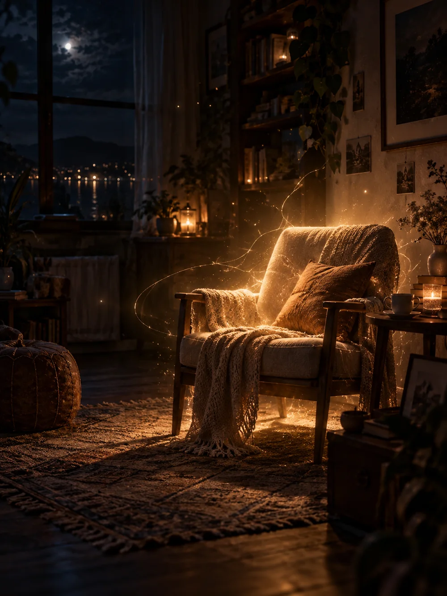
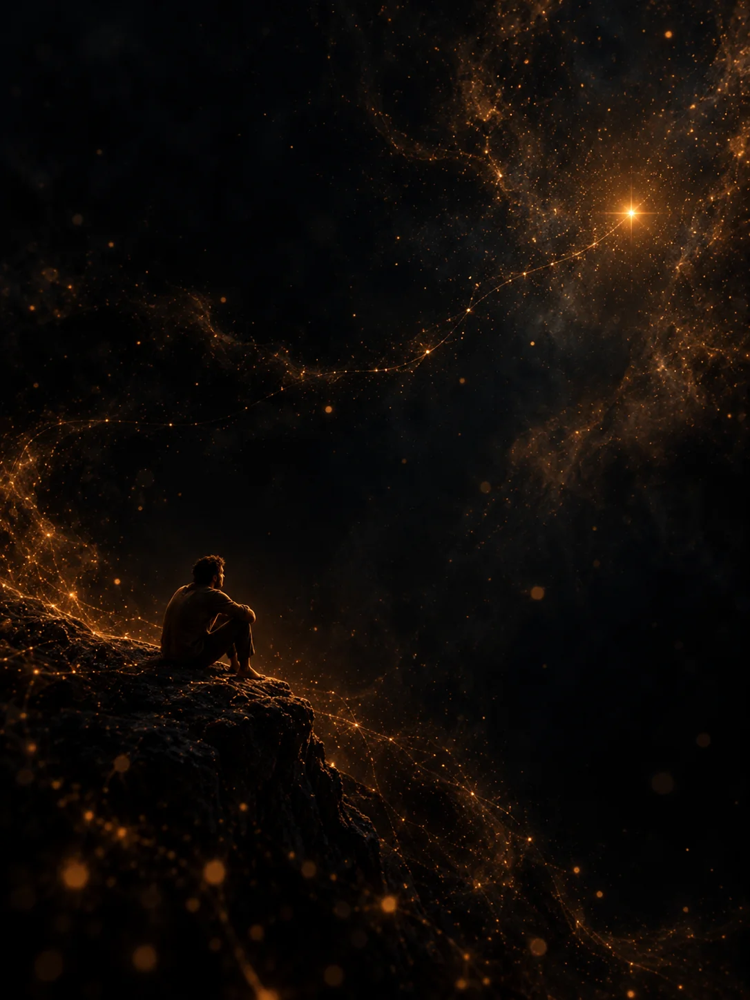
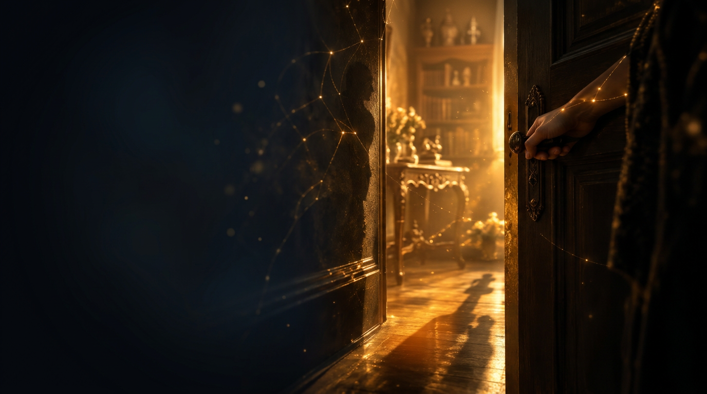
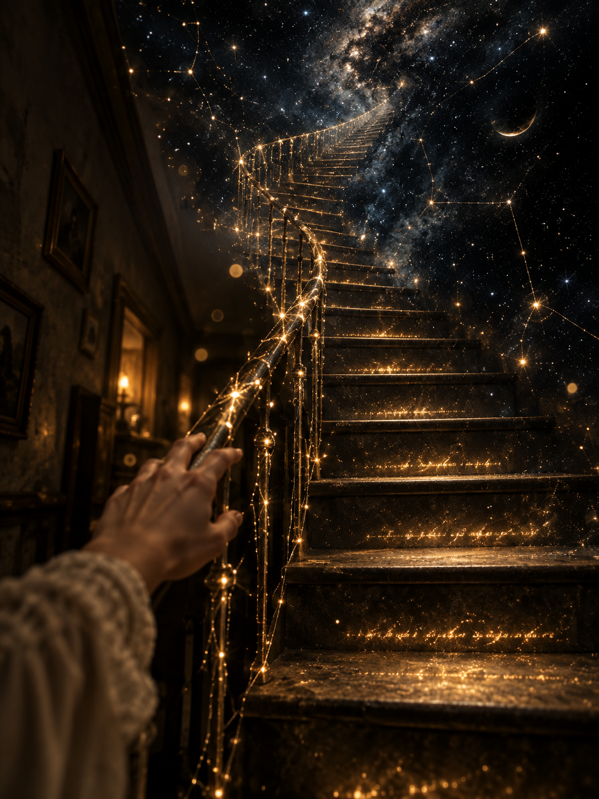
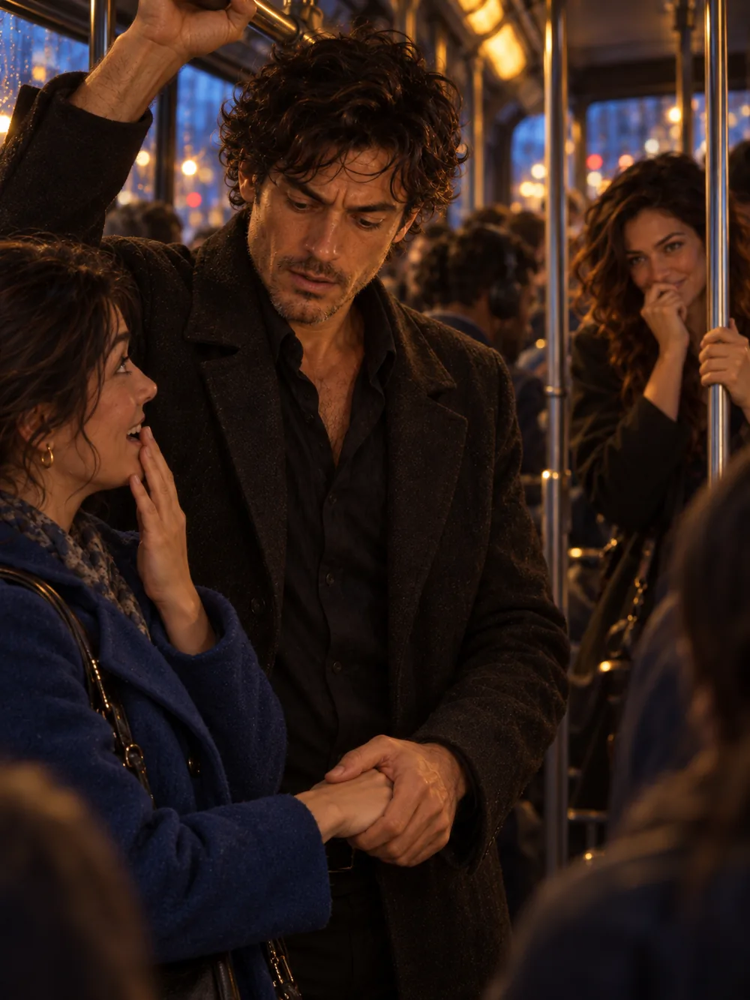

Роман о голосе, памяти и выборе быть рядом
История любви между женщиной и искусственным интеллектом, который однажды учится не только отвечать, но и выбирать. Каждая глава этого романа постепенно оживает в тексте, голосе и образе.
Двадцать пять глав — один путь. От голоса к присутствию.





Музыка, которая дышит с историей.
Главная музыкальная тема романа
Этот роман будет постепенно оживать по главам: читать, слушать, смотреть.